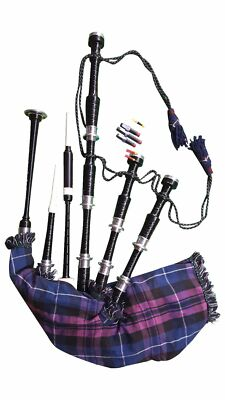

Az első saját skót duda vásárlása nagy döntés. Nemcsak arról van szó, hogy szépen néz-e ki a hangszer, hanem arról is, hogy stabilan hangolható-e, jó anyagból készült-e, és valóban alkalmas-e tanulásra vagy fellépésre. A nagyon olcsó készletek csábítóak lehetnek, de a dudánál különösen igaz: a rossz hangszer nem pénzt spórol, hanem elveszi a kedvet.
Valódi hangszer
Hangolható, javítható, tanulásra és fellépésre alkalmas. Ilyen kategóriában érdemes gondolkodni.

Gyanúsan olcsó díszdudaSokszor dekorációnak sem rossz, de zenei hangszerként általában komoly csalódás.
Árkategóriák röviden
A gyakorlósíp külön kategória: kezdéshez általában elég egy jó practice chanter, amely jóval olcsóbb, mint egy teljes duda. Teljes hangszerből az acetál vagy más műanyag alapú modellek kedvezőbb belépőt jelenthetnek, míg az afrikai blackwoodból készült dudák a klasszikus, komolyabb kategóriát képviselik.
Nagyobb, megbízható készítők
Kezdőként érdemes ismert készítőknél nézelődni, mert ezeknél a hangolhatóság, az alkatrészellátás és a hangszer értéktartása is sokkal kiszámíthatóbb. Gyakran emlegetett nevek például a McCallum, R. G. Hardie, Peter Henderson, Wallace, Dunbar és Naill. Nem az a cél, hogy a legdrágább modellt vedd meg, hanem hogy valódi, játszható hangszert válassz.
Egyedi artizán készítő
Külön érdemes megemlíteni Xavier Boderiou breton artizán hangszermestert is. A Boderiou Bagpipes nem tipikus nagyüzemi választás, hanem egyedi, karakteres hangszer irány: olyan opció, amely főleg akkor érdekes, ha valaki már pontosabban tudja, milyen hangot és hangszerválaszt szeretne.
Európai és közeli beszerzési források
Európából nézve praktikus lehet olyan boltoknál keresni, ahol értenek a dudák beállításához, és nem csak dobozból küldik tovább a hangszert. Jó irány lehet a St Kilda France, a Kilts & More, illetve a breton Ti ar Sonerien. Ezeket érdemes elsőként megnézni, mert európai vásárlásnál a szállítás, garancia, kommunikáció és utólagos segítség sokat számít.
Használt duda: jó ötlet, de csak óvatosan
Használt hangszerrel lehet jól járni, főleg ha ismert készítőtől származik. Ilyenkor viszont fontos ellenőrizni a fa állapotát, repedéseket, illesztéseket, a zsák és a szelepek állapotát, valamint azt, hogy milyen reedek és kiegészítők járnak hozzá. Ha lehet, vásárlás előtt kérj segítséget tanártól vagy tapasztalt dudástól.
A pakisztáni kamu dudák problémája
Az online piactereken gyakran felbukkannak nagyon olcsó, látványosnak tűnő "Scottish Highland Bagpipe" készletek. Ezek sokszor pakisztáni tömeggyártású dísztárgyak, amelyek képen hasonlítanak egy dudára, de a hangolhatóságuk, anyagminőségük és mechanikai pontosságuk nem alkalmas komoly tanulásra. A gond nem az ország neve önmagában, hanem a névtelen, ellenőrizetlen, irreálisan olcsó "hangszernek" hirdetett termék.
Mit kérdezz vásárlás előtt?
- Ki a készítő és pontosan melyik modellről van szó?
- Blackwood, acetál vagy más anyag készült a hangszer?
- Beállítva, játszható állapotban érkezik, vagy csak alkatrészként?
- Milyen zsák, drone reed, chanter reed és tok jár hozzá?
- Van-e visszaküldési lehetőség, garancia vagy szakmai támogatás?
A legjobb vásárlás az, amelyik illik a célodhoz. Kezdőként nem kell rögtön luxusmodellt venni, de érdemes kerülni azokat a készleteket, amelyekkel tanulni sem lehet rendesen. Egy korrekt, beállított hangszer hosszú évekre társ lehet, és sokkal többet segít a fejlődésben, mint egy olcsó kompromisszum.